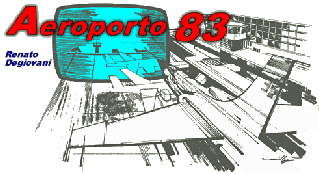

História da indústria de jogos brasileiro
Jogos eletrônicos começaram a ser desenvolvidos em países como Estados Unidos e Japão, que levavam essa proposta para outros cantos do mundo por meio da exportação. Por aqui, o primeiro videogame a entrar no Brasil foi o Telejogo, em 1977, lançado graças a uma parceria entre Ford e Philco.
O Telejogo era inspirado nas chamadas máquinas de Pong que foram criadas pela Atari. Seu catálogo contava com três games, sendo eles Paredão, Tênis e Futebol. Com o passar do tempo, os equipamentos da Atari também chegaram por aqui, reforçando o interesse do público nacional por essa modalidade de entretenimento.
Conforme a tecnologia de desenvolvimento foi chegando ao país, pequenas empresas começaram a criar games próprios. Um bom exemplo é o Aeroporto 83, título considerado como o primeiro jogo eletrônico feito no Brasil, que foi criado ainda nos anos 80, quando os recursos eram limitados. Programado em linguagem de máquina e com o formato de fita cassete, feito para ser compatível com o PC Sinclair ZX81, o jogo foi publicado através de uma edição da revista Micro Sistemas, tendo suas edições esgotadas logo no primeiro mês.
A história dos jogos digitais teve início quando os acadêmicos começaram a projetar jogos simples, simuladores e programas de inteligência artificial, como parte de suas pesquisas em ciência da computação. Somente a partir das décadas de 1970 e 1980 é que os jogos eletrônicos se tornaram populares, quando jogos de arcade, console de jogos eletrônicos e jogos de computador foram introduzidos ao público em geral.
Com um melhor aprofundamento dos princípios do acontecimento da década de 1960. Com o desenvolvimento de chips de silício, os computadores que chegavam a ocupar salas inteiras ficaram menores, mais rápidos e mais potentes. As mídias de armazenamento como os cartões perfurados e as fitas magnéticas foram substituídos por mídias mais rápidas e de maior capacidade de armazenamento, como os discos floppy de 3½ polegadas. Naquela época, os computadores mostravam a informação através de linhas de textos e poucos possuíam um monitor gráfico. As únicas universidades que possuíam computadores com tais monitores eram a Universidade de Utah e o Michigan Institute of Technology (MIT), ambas nos Estados Unidos.

No verão de 1961, o MIT recebeu da Digital Equipment seu último modelo de computador, o PDP-1 (Programmable– Data Processor-1). O "Spacewar!" foi um dos primeiros jogos eletrônicos de computador. Foi concebido por um grupo de estudantes do Massachusetts Institute of Technology, nos Estados Unidos. Um jogo simples de duelo de aeronaves e em 1962 foram desenvolvidos controles específicos para o jogo, visto que os botões nativos da PDP-1 não eram ideias. Estes controles foram o primeiro protótipo de joystick.